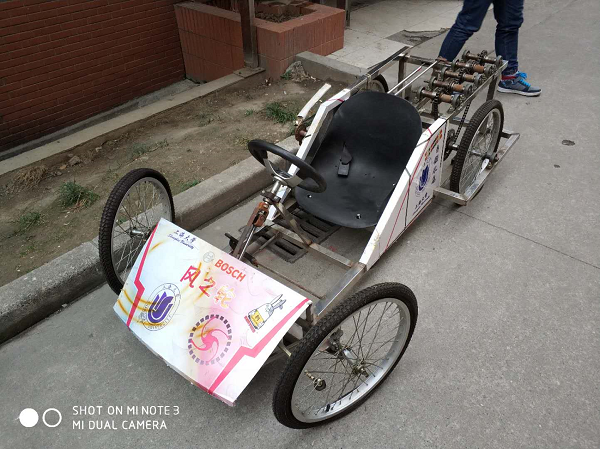
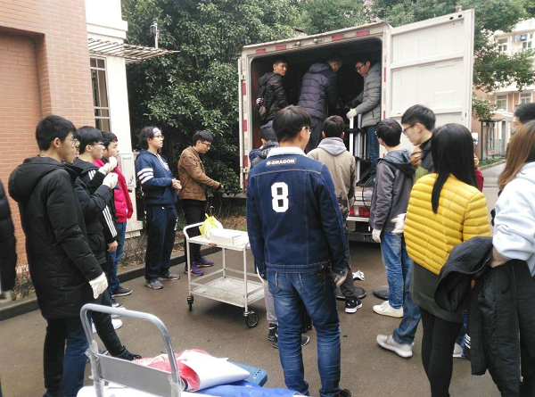
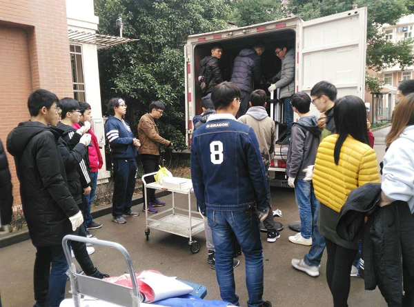

M8搬迁简报
2017年12月30日上午9：30，为配合学校校区调整与整体规划要求，原搬迁至延长校区校内M8楼206、208、210等7间学生宿舍的物品整体搬迁入驻至宝山校区东区新机自大楼318、347实验室。
本次实验室搬迁在上海大学自强队临时党支部书记叶立俊的带领和上海大学自强队指导教师黄慎之、陈万米老师的监督和关心下顺利进行，参加本次M8搬迁工作的还有来自上海大学自强队的研究生及本科生同学共46名。
本次搬迁的同学们大都是自愿报名，且大部分是智能车组的本科同学，共分为两批学生，每批学生大约20人左右，在各组负责人的带领下按时等候在延长校区和宝山校区准备搬运和接应工作。同学们发扬了上海大学自强队自强不息，互帮互助的精神，在上午11:30前快速高效地将搬运物品打包装箱、编号登记、搬运上车、现场清扫等工作，完成了自强队实验室物品的整体搬迁工作。
此外，这次搬迁还得到了上海大学校办顾瑛老师的大力支持和理解。特别值得一提的是，在本次搬迁过程中，上海大学自强队的“风之轮”赛车（2011年自强队队员参加博世电动工具创意车设计大赛挺进中国赛区最终排名第二）被上海大学档案馆收藏，留作纪念。
 

上海大学自强队
2017年12月30日